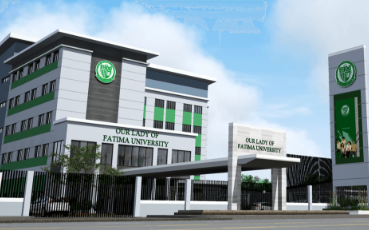
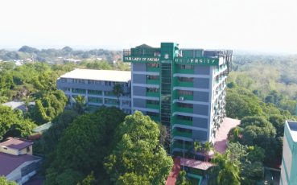

Our Lady of Fatima University
Campuses
Currently, Our Lady of Fatima University has six (6) campuses across different provinces. These campuses enable us to deliver exeptional academic contribution to the society and to the improvement of man as man.
OLFU Antipolo
Our Lady of Fatima University Antipolo In year 2007, a ground-breaking ceremony marked the beginning of the OLFU Antipolo campus to provide affordable but of quality education to the residents of Rizal and its nearby communities. In 2008, the first building –Vicente M. Santos Building– was completed and was spearheaded by Mrs. Racquel Braganza until year 2010. Initially there were 10 programs offered by the campus at that time. The campus during its first operation was nurtured by 39 dedicated faculty members and was assisted by 17 non-teaching staff. In 2011, Engr. Wilfredo M. Basilio became the 2nd Campus Administrator up to the present.
In 2009, Juliet Santos Building (JSB), the 2nd building, was constructed to house the growing student population. This building has the University gym where the University Phoenix Basketball Team practices in preparation for the National Athletic Association of Schools, Colleges, and Universities (NAASCU) basketball competition.
A year after (2010), another building was built –the St. John de Baptist Hall– which accommodated the different paramedical and computer laboratory rooms.
In 2011, the 6-storey St. Catherine Hall was constructed and housed the Fatima University Gallery (FUG) where various art exhibits are displayed and is open for students' viewing. The FUG is managed by Mr. Robert Bjorn O. Santos, Gallery Director and concurrently Director of the Alumni Affairs Office and the English Studies.
In 2016, because of continuous effort to give quality education, the campus went through PACUCOA Accreditation. These programs are: BS in Hotel and Restaurant Management, BS in Travel Management, BS in Information Technology, BS in Nursing, BS in Business Administration major in Marketing Management, BS in Medical Laboratory Sciences, BS in Psychology, Bachelor of Elementary Education major in Early Childhood Education, BS in Pharmacy, and BS in Physical Therapy.
OLFU Laguna
In year 2019, OLFU continued to widen its reach as it had stepped on to a new milestone – this time, in Southern Luzon.
Making quality Fatimanian education even more within reach, the sixth OLFU Campus began its operations in what is known as the “Lion City of South Luzon” – the highly progressive City of Santa Rosa, Laguna.
A groundbreaking ceremony was held on 20 October 2018 which formally initiated the construction phase. The Campus was officially inaugurated last 19 June 2019 along the Old National Hi-Way (Manila South Road), in Barangay Macabling, City of Santa Rosa. Situated just five minutes from SM City, the school opened during SY 2019-2020 with its initial program offerings: Bachelor of Science degrees in Medical Laboratory Science, Pharmacy, Psychology, Computer Science and International Tourism Management.
It has slowly added new programs through the years namely: Bachelor of Science degrees in Physical Therapy, Accountancy, Accounting Information System, and Criminology. It now also welcomes the Senior High School Students with the ABM (Accountancy, Business, and Management), STEM (Science, Technology, Engineering, and Mathematics), HUMMs (Humanities and Social Sciences), and GAS (Generic Academic Strand).
OLFU Sta. Rosa now sits on a four-hectare property, and the campus' first building stands with five stories and over 20 classrooms and laboratories. A total of five to six buildings are in the pipeline over the next few years.
OLFU Nueva Ecija
In pursuit of actualizing the bid to further spread its reach up to Northern Luzon, OLFU began to operate in Nueva Ecija when they acquired and the Nueva Ecija Doctors' Colleges, Inc. (NEDCI) in year 2015. Located in Maharlika Highway, Cabanatuan City, Nueva Ecija, the branch now serves as Fatima's fifth campus.
Being established as an educational institution in 1970, NEDCI provided OLFU Cabanatuan Campus a fertile ground of academe experience on which OLFU immediately began building on through infusing its initial program offerings and widespread facilities upgrade. From its time of acquisition, continuous infrastructures were built such as: a fully air conditioned multi-purpose gym and auditorium, (the 1st in Region III Nueva Ecija sport Complex), 3-storey classroom, most of which are air-conditioned. Modern equipment for the laboratories were purchased to have a simulated hospital/hotel necessary for the training of their students.
The campus offers Bachelor's degree in Nursing, Medical Laboratory Science, Pharmacy, Psychology, Accountancy, Accounting Information System, Business Administration, Hospitality and Tourism Management, and Criminology. The campus also welcomes the Senior High School Students with the ABM (Accountancy, Business, and Management), STEM (Science, Technology, Engineering, and Mathematics), HUMMs (Humanities and Social Sciences), and GAS (Generic Academic Strand).
OLFU Pampanga
With the intent to extend and actualize the mission-vision of “Improving Man as Man” to the Kapampangans, OLFU acquired the East Central Colleges (ECC), an educational institution of higher learning on the 12th of April 2012. Located on B. Mendoza Street, Sto. Rosario, ECC was a 67-year old educational institution known for its legacy of offering affordable and accessible quality education to Kapampangans and the nearby regions. The establishment of the Pampanga Campus ushered in the same high quality standard of education espoused by Our Lady Fatima University.
With a modest 500 student count as a starting point in ECC, OLFU Pampanga began building a reputation for being a new haven for achievers in 2012. On September 19th of the same year, the University marked a milestone as it broke ground on a sprawling property on MacArthur Highway, Barangay Dela Paz Norte. As multiple, state-of-the-art buildings and facilities were constructed on the said site, this allowed OLFU Pampanga to expand its program offerings in response to the growing clamor from the Pampanga community. And, by July 28, 2015, the Security and Exchange Commission (SEC) granted the University with the registration, and with it, the right to replace the name of East Central Colleges with that of Our Lady of Fatima University-Pampanga.
At the moment, OLFU Pampanga is composed of 11 Colleges in the fields of: Nursing, Medical Laboratory Science (MedTech), Pharmacy, Physical Therapy, Arts & Sciences, Business & Accountancy, Hospitality & Institutional Management, Computer Studies, Education, Criminal Justice and Engineering. These Colleges together present 20 program offerings. Additionally, the University has Senior High School, Junior High School and Graduate School programs.
OLFU Quezon City
In 1996, Our Lady of Fatima University made its presence known in Quezon City with its new campus along Regalado Avenue in Fairview—- the Fatima Eye and Rehabilitation Center Building which also housed the Physical Therapy program.
In 1998, a new eight-storey building overlooking the scenic La Mesa reservoir was constructed. The acquired property goes back in history as the residence of the former Philippine President Elpidio Quirino. In its early years, several curricular programs were offered in the Quezon City Campus, namely: Education, Tourism, Business Administration, Computer Science, Information Technology, Nursing, Pharmacy, Medical Technology, Psychology and Biology. In addition, Basic Education (Elementary and High School) was also opened; housed in a brand-new, five-storey building.
This Fatima campus, soon known as the Hilltop because of its hilly terrain, constructed a few more buildings in 2003 and 2005 to accommodate the rapidly-growing student population— an affirmation of its acceptance by the people of Quezon City.
None too soon, two more buildings sprouted up along Regalado Avenue; this time, serving as the base for nursing laboratories, medtech laboratories, as well as the programs of business administration, accountancy and education.
Today, OLFU-QC Campus is home to 10 Colleges and a robust roster of programs.
To ensure that its program offerings are relevant and of quality standard, the University voluntarily submits itself to program accreditations. The Quezon City Campus is continuously monitored by various agencies to assess the programs’ compliance to quality standards. These accrediting agencies are the Philippine Association of Colleges and Universities Commission on Audit (PACUCOA) and the Association of Christian Schools, Colleges and Universities (ACSCU).
In June 2012, university-wide ISO implementation was put into action to further increase customer satisfaction, improve product quality, and achieve international quality recognition.
In 2018, the University became ISO 9001:2015 certified by the AJA Registrars. This prestige is evidence that OLFU’s processes and standards are at par with international management systems.
As an accomplished and reputable Private Higher Educational Institution (PHEI) in the country, Our Lady of Fatima University- Quezon City nurtures a harmonious rapport with its stakeholders in the fulfilment of its vision, mission, objectives and strategic plans. With over two decades as a learner’s haven in Quezon City, this campus takes pride in aligning itself to OLFU’s deep-rooted culture of quality and excellence; true to its vision of “improving man as man”.
OLFU Valenzuela
The main campus is located in Valenzuela City, on the outskirts of Metropolitan Manila. Highly charged and steaming with activities, the main campus houses the College of Medicine Building and the St. Martin de Porres Building where the College of Dentistry and College of Business and Accountancy are situated. Also found in Valenzuela is the Fatima University Medical Center, a partner institution of the College of Medicine.
Another cluster of Valenzuela Campus buildings are at the vicinity of the National Shrine of Our Lady of Fatima. This location houses the College of Hospitality and Institutional Management, College of Maritime Education and Basic Education Department.
The range of foreign students expose the learners to diverse cultures and likewise gives the community an international touch.
Valenzuela Campus has easy access to downtown Manila and metro Quezon City. Bus and taxi commutes are easy and numerous. The metro train terminals (Light Railway Transit: Northwest to Southwest and Metro Rail Transit: North to South) are only 15 to 25 minutes ride away from the campus.
The Valenzuela City Campus also exclusively houses the College of Medicine, College of Dentistry, and College of Maritime Education.